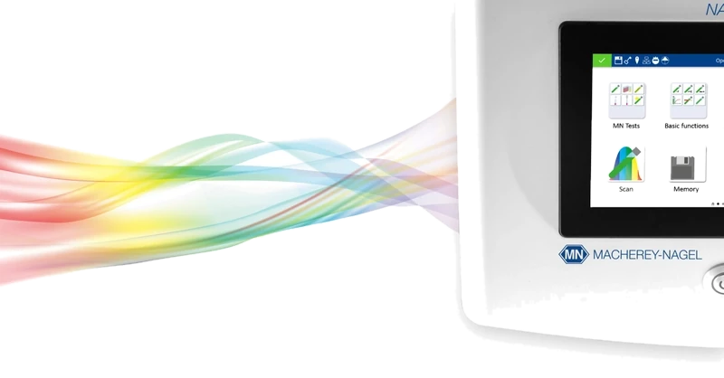

UV-Vis spectrophotometer for water and wastewater analysis
NANOCOLOR Advance
The NANOCOLOR Advance spectrophotometer combines the key features of the PF-12Plus portable compact photometer and the high-precision NANOCOLOR VIS II spectrophotometer. It delivers precise and reliable measurement results in everyday laboratory routine, and thanks to its rechargeable battery it can also be used on the move. With a wavelength range of 340–800 nm, it can measure all photometrically evaluable MACHEREY-NAGEL test kits, which makes NANOCOLOR Advance a universal instrument for the full range of water and wastewater analysis.